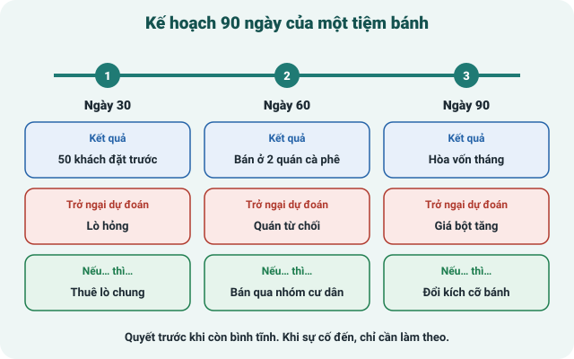

K6 · Thích ứng và bền bỉ › Bậc 4 Thành thạo
Chủ động và phục hồi sau thất bại
Bài này làm Tờ 3: Kế hoạch 90 ngày và phiếu rút kinh nghiệm. Mẫu in. Bài dạy chủ động như một kỹ năng làm việc. Phần cảm xúc sau thất bại có ở tamhonkhoe.com. Phiếu rút kinh nghiệm dùng lại cách làm của bài Khi việc không như kế hoạch (N3).
1. Mục tiêu
- Lập kế hoạch 90 ngày gồm 3 mốc, mỗi mốc có trở ngại dự đoán và phương án dự phòng.
- Viết phiếu rút kinh nghiệm sau thất bại, có một hành động trong 48 giờ.
2. Khởi động truy xuất
- Năm ô của Phiếu thử nghiệm là gì?
- Pivot nghĩa là đổi bao nhiêu thành phần?
Đáp án
- Giả thuyết; cách thử; chỉ số; ngưỡng; thời hạn và chi phí tối đa.
- Một thành phần, giữ phần còn lại.
Xem lại: Thử nghiệm và pivot.
3. Giải thích
Founder không có sếp giao việc. Nếu bạn không tự bắt đầu, sẽ không ai bắt đầu thay bạn.
Chủ động là hành vi, không phải tính cách. Nghiên cứu về chủ động cá nhân (personal initiative) mô tả ba hành vi học được:
Ba hành vi chủ động
- Tự bắt đầuLàm việc cần làm trước khi có ai yêu cầu.
- Nhìn trướcĐoán trở ngại sắp tới và chuẩn bị từ bây giờ.
- Vượt trở ngạiGặp chặn thì thử cách khác, không dừng ở lần đầu.
Kế hoạch 90 ngày có dự phòng. Chia 90 ngày thành 3 mốc, mỗi mốc 30 ngày. Mỗi mốc ghi:
- Kết quả: đo được. Ví dụ "20 khách trả tiền", không phải "phát triển khách".
- Trở ngại dự đoán: điều gì dễ làm mốc trễ nhất?
- Nếu… thì…: "Nếu nhà cung cấp giao trễ quá 5 ngày, thì tôi đặt nhà thứ hai."
Câu "nếu… thì…" giúp bạn quyết trước, khi còn bình tĩnh. Lúc sự cố xảy ra, bạn chỉ cần làm theo.

Phục hồi sau thất bại. Thất bại nhỏ là chuyện hằng tuần của founder. Thay vì chỉ buồn hay đổ lỗi, viết phiếu rút kinh nghiệm bốn dòng:
- Chuyện gì xảy ra: sự kiện, không phán xét.
- Phần trong tầm tay: điều bạn đã có thể làm khác.
- Điều chỉnh: lần sau làm gì khác.
- Hành động trong 48 giờ: một việc nhỏ, có hạn.
Hành động trong 48 giờ là phần quan trọng nhất. Nó biến bài học thành việc làm.
4. Ví dụ tại nơi làm việc Việt Nam
Tình huống giả định. Chị Ngân mở tiệm bánh mì nướng muối ớt bán online ở Cần Thơ. Đợt khuyến mãi đầu tiên chỉ có 12 đơn, trong khi chị chuẩn bị cho 80.
Chị viết phiếu rút kinh nghiệm. Chuyện gì xảy ra: đăng khuyến mãi một lần trên trang riêng lúc 14 giờ, ít người xem. Phần trong tầm tay: chị không hỏi khách quen khung giờ họ hay đặt. Điều chỉnh: hỏi khách trước, đăng vào giờ đó, và đăng ở cả nhóm cư dân. Hành động 48 giờ: nhắn 20 khách cũ hỏi giờ họ hay đặt đồ ăn vặt.
Chị lập kế hoạch 90 ngày. Mốc 1: 150 đơn trong tháng. Trở ngại dự đoán: shipper nghỉ lễ. "Nếu shipper nghỉ quá 2 ngày, thì tôi nhận khách tự đến lấy, giảm 5.000 đồng."
Vì sao cách này tốt: thất bại thành một việc làm cụ thể trong 2 ngày. Trở ngại lớn nhất có sẵn phương án trước khi xảy ra.
5. Thực hành
Tình huống giả định. Anh Phát mở dịch vụ vệ sinh máy lạnh ở Biên Hòa. Tuần này, một khách lớn hủy hợp đồng vì nhân viên đến trễ hai lần.
Viết phiếu rút kinh nghiệm bốn dòng. Viết một mốc 30 ngày có câu "nếu… thì…".
Gợi ý 1
Phần trong tầm tay: anh đã có cách nào để biết nhân viên sắp trễ chưa?
Gợi ý 2
Hành động 48 giờ có thể là gọi lại khách đã hủy, hoặc đặt quy tắc báo trễ cho nhân viên.
Lời giải mẫu
Phiếu rút kinh nghiệm
- Chuyện gì xảy ra: nhân viên đến trễ 40 phút ở hai lần hẹn liên tiếp. Khách hủy hợp đồng 6 tháng.
- Phần trong tầm tay: anh xếp lịch sát nhau, không tính thời gian kẹt xe giờ cao điểm.
- Điều chỉnh: để 30 phút trống giữa hai lịch; nhân viên báo trước 15 phút nếu có thể trễ.
- Hành động 48 giờ: gọi xin lỗi khách, đề nghị một lần vệ sinh miễn phí; sửa lịch tuần tới.
Mốc 30 ngày: không lịch nào trễ quá 10 phút. Nếu một nhân viên trễ hai lần trong tuần, thì anh đi kèm người đó một ngày để xem nguyên nhân.
(Thông tin là giả định.)
6. Tự kiểm tra
Chọn đáp án. Mỗi lựa chọn đều có giải thích.
Câu 1. Việc nào thể hiện hành vi "nhìn trước"?
-
Chưa đúng. Đây là phản ứng sau khi sự cố xảy ra.
-
Đúng. Đúng. Bạn đoán trở ngại sắp tới và chuẩn bị từ bây giờ.
-
Chưa đúng. Làm thêm giờ có thể cần, nhưng không phải chuẩn bị trước cho một trở ngại.
Câu 2. Câu nào là một câu "nếu… thì…" dùng được?
-
Chưa đúng. Không rõ chuyện gì, và không rõ sẽ làm gì.
-
Đúng. Đúng. Có dấu hiệu cụ thể và một hành động cụ thể đã quyết trước.
-
Chưa đúng. "Nghĩ cách" chưa phải hành động. Câu này không giúp bạn quyết trước.
Câu 3. Dòng nào trong phiếu rút kinh nghiệm viết đúng phần "Phần trong tầm tay"?
-
Chưa đúng. Đây là đổ lỗi cho bên ngoài. Bạn không làm gì được với câu này.
-
Đúng. Đúng. Đây là việc bạn đã có thể làm khác, và lần sau làm được.
-
Chưa đúng. Đây là phán xét bản thân, không phải một việc cụ thể để điều chỉnh.
Câu 4. Theo Campos và cộng sự (2017) ở Togo, kết quả nào đúng?
-
Chưa đúng. Ngược lại. Đào tạo truyền thống tăng khoảng 11%, không có ý nghĩa thống kê.
-
Đúng. Đúng. Đây là kết quả chính của nghiên cứu đăng trên Science.
-
Chưa đúng. Nghiên cứu cho thấy hành vi chủ động có thể học được qua đào tạo.
7. Phản tư
- Lần gần nhất bạn gặp thất bại trong công việc, bạn mất bao lâu để làm việc tiếp theo?
- Trong ba hành vi chủ động, hành vi nào bạn làm ít nhất?
8. Áp dụng thật
Trong 7 ngày tới, lập Tờ 3 cho 90 ngày tới. Với mỗi thất bại nhỏ trong tuần, viết phiếu bốn dòng và làm hành động 48 giờ.
Mức bằng chứng. Campos, Frese, Goldstein và cộng sự (2017), Science 357(6357): thử nghiệm ngẫu nhiên với khoảng 1.500 chủ doanh nghiệp nhỏ ở Togo. Khóa học chủ động cá nhân tăng lợi nhuận khoảng 30% sau hai năm. Khóa đào tạo kinh doanh truyền thống tăng khoảng 11%, không có ý nghĩa thống kê. Bối cảnh Togo khác Việt Nam, nên kết quả không chắc lặp lại y như vậy. Câu "nếu… thì…", Tờ 3 và phiếu bốn dòng là cách làm do site đề xuất.
9. Siêu dữ liệu
| skill | K6 · Thích ứng và bền bỉ |
|---|---|
| level | Bậc 4 · Thành thạo |
| group | N7 |
| framework_map | EntreComp: Taking the initiative; Motivation and perseverance; Planning and management; WEF: Resilience, flexibility and agility; SkillsFuture CCS: Adaptability; LifeComp: P2 Flexibility (chỉ dẫn chiếu) |
| updated | 2026-11-14 |
Hoàn thành bài
Đánh dấu đã học để site gợi ý lịch ôn sau 1, 3 và 7 ngày. Dữ liệu chỉ lưu trên máy của bạn.
Lịch ôn gợi ý: